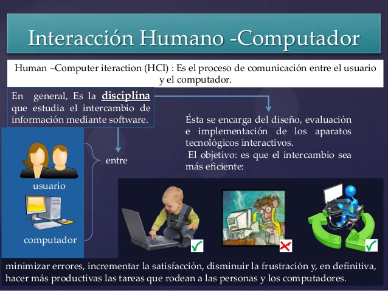
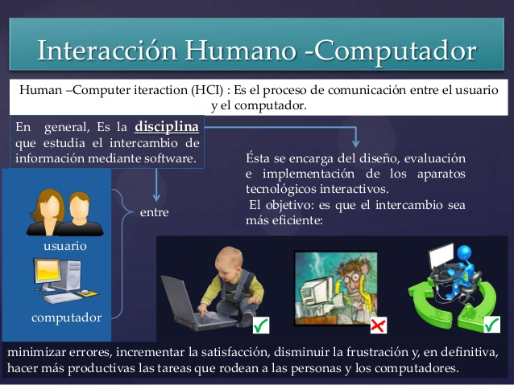

La interfaz de usuario
La interfaz de usuario (UI) es el conjunto de los controles y canales sensoriales mediante los cuales un usuario puede comunicarse con una máquina. Por ejemplo, en una computadora, la pantalla, el teclado y las bocinas son parte de la interfaz de usuario porque la utilidad de todas ellas es hacer que entre o salga información del equipoUna buena interfaz de usuario se caracteriza por tener un alto grado de usabilidad, y por ser amigable e intuitiva.
La interfaz gráfica de usuario (GUI) es el contenido gráfico mediante el cual se visualiza información del equipo en una pantalla. Casi todos los programas tienen alguna clase de interfaz visual, que sirve al mismo tiempo para mostrar información al usuario y como un mapa de navegación entre diferentes comandos.
Por ejemplo, si abres un archivo de Word, la interfaz de usuario te permitirá ver la información que
contiene en la pantalla, pero también te permitirá interactuar con un sinfín de herramientas para
modificar el documento.
Workana, l. C. (2012). interfaz-de-usuario.

Interacción Humano Ordenador
La Interacción Humano-Computador en la actualidad está presente en cualquier software o producto y por ende es una asignatura obligatoria en todo el mundo (Abascal et al., 2001). Una interfaz es una “superficie” de contacto (Laurel & Mountford, 1990), que refleja las propiedades físicas de los usuarios que interactúan, las funciones a realizar, y el balance de poder y control. La interfaz forma parte de un entorno cultural, físico y social, y por tanto, es necesario tener en cuenta una serie de factores al momento de diseñarla. Es así como el diseño de la interfaz se ha convertido en un elemento crítico en el desarrollo de productos software y hardware, y es uno de los principales factores que influyen en el éxito y competitividad de las aplicaciones. Actualmente, los sistemas interactivos prestan una atención cada vez mayor a las interfaces, demandando cambios en el desarrollo de estos productos. Un sistema interactivo ya no es sólo juzgado por su capacidad de realizar operaciones sino también por su capacidad de comunicarlas adecuadamente al usuario.
BITECA, Revista Colombiana de Computación (2020). Interacción Humano-Computador en la Sociedad Colombiana de Computación
 
